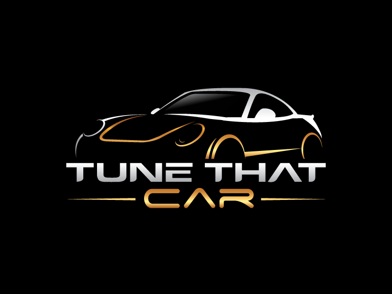
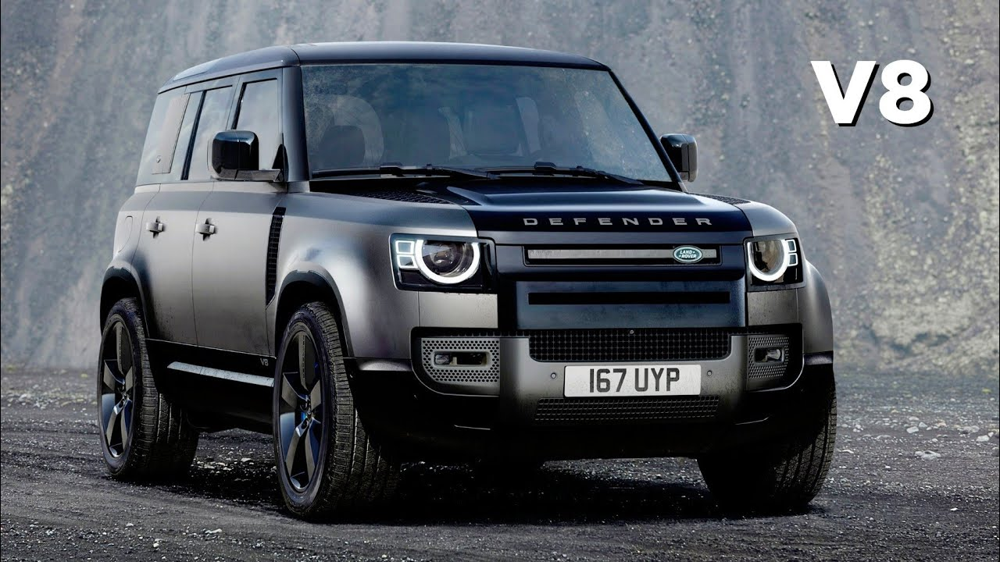
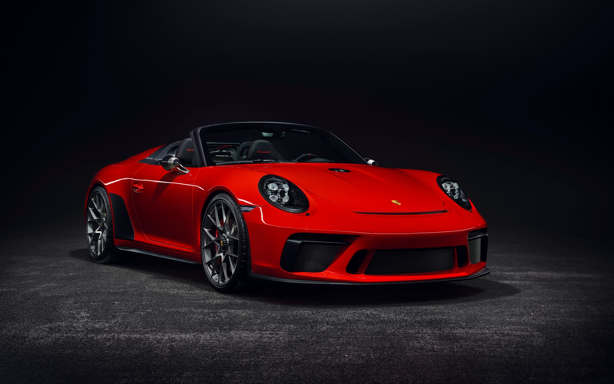

PICK YOUR CARS

Fly On Wheels!
ALL WE HAVE IS NOW
Cars have controls for driving, parking, passenger comfort, and a variety of lights. Over the decades, additional features and controls have been added to vehicles, making them progressively more complex,Originally developed as a military off-roader, later more luxurious models were added to the line. |
TYPES
A car (or automobile) is a wheeled motor vehicle that is used for transportation. Most definitions of cars say that they run primarily on roads, seat one to eight people, have four wheels, and mainly transport people instead of goods.[1][2]
MERCEDES G-WAGON
The Mercedes-Benz G-Class, sometimes colloquially called the G-Wagen and or "G-Wagon"[3] is a four-wheel drive automobile manufactured by Magna Steyr (formerly Steyr-Daimler-Puch) in Austria and sold by Mercedes-Benz. Originally developed as a military off-roader, later more luxurious models were added to the line. DEFENDER
The Land Rover Defender (initially introduced as the Land Rover 110 / One Ten, and in 1984 joined by the Land Rover 90 / Ninety, plus the new, extra-length Land Rover 127 in 1985) is a series of British off-road cars and pick-up trucks. They consistently have four-wheel drive, and were developed in the 1980s PORCHE
Porsche founded his own design company, Porsche Design, which is renowned for exclusive sunglasses, watches, furniture, and many other luxury articles. Louise's son and Ferry's nephew Ferdinand Piëch, who was responsible for mechanical development of Porsche's production and racing cars.BMW
BMW is headquartered in Munich and produces motor vehicles in Germany, Brazil, China, India, Mexico, the Netherlands, South Africa, the United Kingdom, and the United States.
TOP BRANDS

DEFENDER
The Land Rover Defender (initially introduced as the Land Rover 110 / One Ten, and in 1984 joined by the Land Rover 90 / Ninety, plus the new, extra-length Land Rover 127 in 1985) is a series of British off-road cars and pick-up trucks. They consistently have four-wheel drive, and were developed in the 1980s from the original Land Rover series which was launched at the Amsterdam Motor Show in April 1948.
PORCHE
Porsche's company logo stems from the coat of arms of the Free People's State of Württemberg of Weimar Germany of 1918–1933, which had Stuttgart as its capital. (The Bundesland of Württemberg-Hohenzollern used the same arms from 1945 to 1952, while Stuttgart during these years operated as the capital of adjacent Württemberg-Baden.) The arms of Stuttgart appear in the middle of the logo as an inescutcheon

BMW
Automobiles are marketed under the brands BMW, Mini and Rolls-Royce, and motorcycles are marketed under the brand BMW Motorrad. In 2017, BMW was the world's fourteenth-largest producer of motor vehicles, with 2,279,503 vehicles produced.[2] The company has significant motor-sport history, especially in touring cars, sports cars, and the Isle of Man TT.
GALLERY
HAVE SOME QUERY?
Reach Us
INSTAGRAM-FACEBOOK-TWITTER